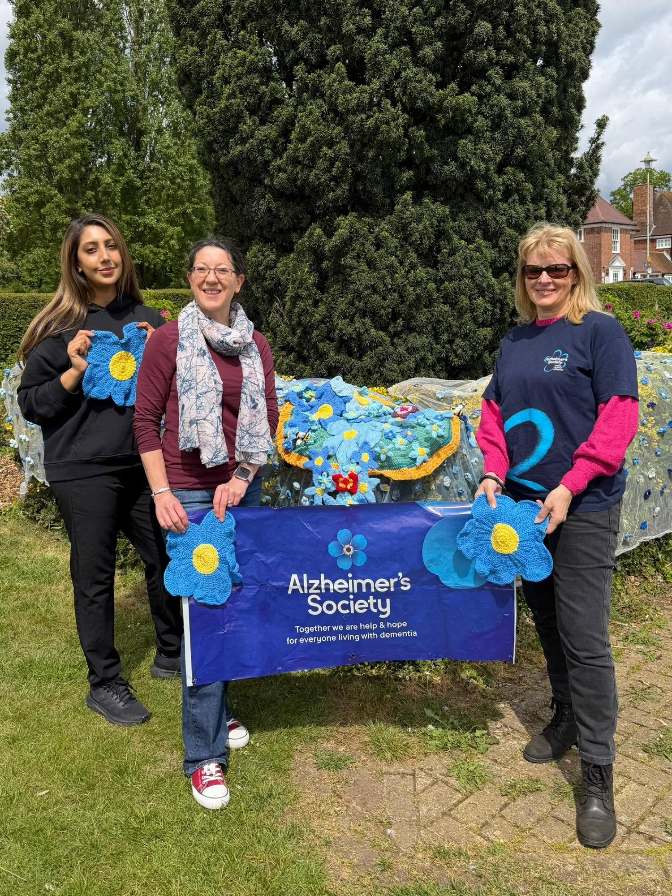

Looking for information?
Find organisations that can provide information and advice about dementia, caring and living well in the community.
Explore our partnersWelwyn Hatfield and Hertfordshire
We bring local organisations together to help people living with dementia, their families and carers feel supported, informed and connected.

About WHDFCP
Living with dementia can sometimes feel difficult or confusing. Finding the right information and knowing where to turn for help can make a real difference.
The Welwyn Hatfield Dementia Friendly Community Partnership brings together organisations and people from across our local community.
Together, we work to make Welwyn & Hatfield a more understanding, welcoming and supportive place for people living with dementia and the people who care for them.
We can help people find information, advice, activities and local organisations that may be able to offer practical or emotional support.

Support and information
There are organisations across Hertfordshire offering information, advice, activities and practical support. Our partnership helps bring these organisations together.
Find organisations that can provide information and advice about dementia, caring and living well in the community.
Explore our partnersFamilies, friends and unpaid carers can also access information and support from organisations across Hertfordshire.
Find useful organisationsFollow our Facebook page for local news, activities, events and information from the dementia-friendly community.
Visit FacebookA community partnership
Dementia-friendly communities are built by people working together. Our partners include local councils, charities, health and care organisations, community groups, businesses, libraries, leisure services and people with personal experience.
Each organisation brings its own knowledge and experience. Together, we can help make it easier for people affected by dementia to stay connected and involved in their local community.
Meet our partnersKeep in touch
Follow the Welwyn Hatfield Dementia Friendly Community Partnership on Facebook for local information, activities, events and updates.